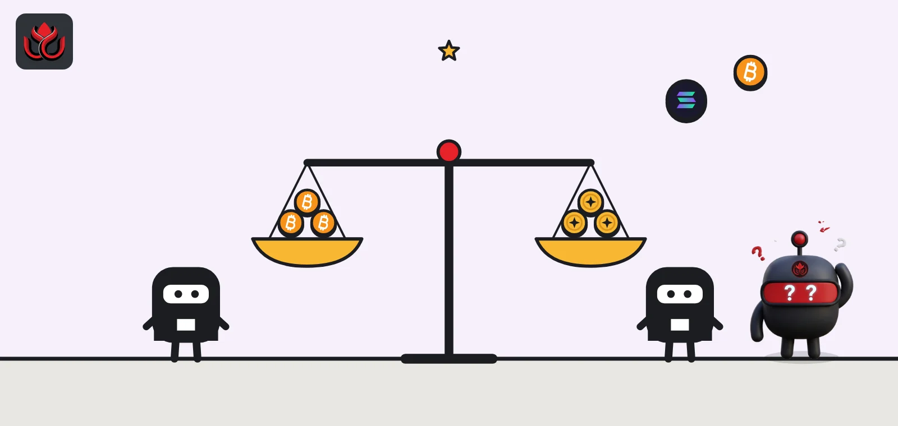

CLARITY Act explained: what the crypto market bill would do and why it stalled
The CLARITY Act, H.R. 3633, would write into law which crypto assets and platforms the SEC oversees and which fall to the CFTC. As of November 2, 2026, it is stuck in the Senate after a 49 to 50 vote to start debate failed on September 15.

Key points
- The Digital Asset Market Clarity Act (H.R. 3633) is a market structure bill: it would split crypto oversight between the SEC and the CFTC and set rules for exchanges, brokers and token projects.
- The Senate Banking Committee advanced it 15 to 9 on May 14, 2026, but a Senate vote to start debate failed 49 to 50 on September 15, 2026. It needed 60.
- As of November 2, 2026, no new Senate vote had been announced on the official pages we checked, and the SEC and CFTC are writing their own interim rules.
What is the CLARITY Act?
The CLARITY Act, formally the Digital Asset Market Clarity Act, is a bill in the US Congress numbered H.R. 3633. It is called a market structure bill because it deals with how crypto markets are organized and supervised: which tokens count as securities, which count as commodities, and what exchanges, brokers and dealers must do.
Senate Majority Leader John Thune pitched it as the next step after the GENIUS Act, the 2025 stablecoin law. He argued that clear stablecoin rules helped the sector grow and that the same approach should cover all digital assets, his floor remarks say.
What would the CLARITY Act do?
According to Thune and to fact sheets from Republicans on the Senate Banking Committee, the Senate version would:
- Split oversight: divide crypto supervision between the Commodity Futures Trading Commission (CFTC) and the Securities and Exchange Commission (SEC), drawing what the committee calls a bright line between their jurisdictions.
- Add disclosure: create a tailored disclosure regime so projects can raise money, with anti-fraud and anti-manipulation protections.
- Target FTX-style failures: require exams of exchanges, bar firms from using customer funds as their own, and stop exchanges and their affiliates from trading on their own platforms.
- Treat DeFi by control: protect software developers and peer-to-peer activity, while setting risk and compliance standards for centralized firms that deal with DeFi, an approach the committee calls "control rather than code."
- Fight illicit finance: put centralized crypto firms under a sanctions framework and give law enforcement new tools against money laundering.
Sources: Thune and the Banking Committee fact sheet.
What would the CLARITY Act mean for crypto users?
For people who trade crypto, the main changes would come through the platforms they use. Republicans on the Banking Committee say the bill strengthens disclosure, keeps anti-fraud powers in place, limits insider abuse and promotes financial literacy, their fact sheet says.
Thune focused on the lessons of the FTX collapse. Exchanges would face examinations, could not treat customer money as their own, and could not trade against customers on their own platforms through affiliates. He summed it up in one line: "This bill would prevent another FTX." His remarks also say the bill gives investors the information they need and bars manipulation of token values.
For token projects, the tailored disclosure regime would offer a federal route to raise money, instead of the uncertainty over whether every token sale is a securities offering.
Where does the CLARITY Act stand as of November 2, 2026?
The bill cleared the Senate Banking Committee by 15 to 9 on May 14, 2026, the committee said, and moved toward the Senate floor. Before the floor vote, Senators Cynthia Lummis, John Boozman and Tim Scott released a final draft, and Thune said Democrats had won 126 substantive changes.
On September 15, 2026, a procedural vote to begin debate failed 49 to 50, the Senate roll call shows. Such motions need 60 votes. Banking Committee Chairman Tim Scott said the motion "fell short because of Senate Democrats" and called on the SEC and CFTC to write rules until Congress acts, his statement says. Democrats who voted no pointed to weak ethics rules covering the president, as LC Insight reported from their statements.
As of November 2, 2026, we found no new floor vote announced on the official Senate pages we checked. The bill is not dead: the Senate can try again, but any path needs Democratic votes.
Why did the CLARITY Act stall?
Both sides agree on much of the market structure text. The Banking Committee vote in May had support from both parties, and Thune said 126 substantive changes were made at Democrats' request. The split came over ethics. Democrats who backed the bill in committee, including Senator Angela Alsobrooks, voted no on the floor and said they wanted clear ethics rules covering the president and other senior officials, as LC Insight reported.
The math is hard. According to the roll call, every one of the 49 yes votes on September 15 came from Republicans. Even with the four Republicans who voted no, supporters would have been short of 60. Any new attempt needs a bloc of Democratic votes, which in practice means a deal on ethics.
Timeline
Banking Committee Republicans publish fact sheets ahead of markup
SEC and CFTC issue a joint interpretation on crypto assets
Senate Banking Committee advances the bill 15 to 9
Senate vote to start debate fails 49 to 50
CFTC proposes its own crypto market rules, citing the stalled bill
How is the CLARITY Act different from the GENIUS Act?
The GENIUS Act is already law and covers only payment stablecoins: reserves, redemption and who supervises issuers. The CLARITY Act would cover the rest of the market, such as tokens like bitcoin and ether, the exchanges that list them and the projects that issue new tokens.
Put simply, GENIUS decides who can issue a digital dollar. CLARITY would decide who polices the trading of everything else.
Supporters link the two on purpose. Thune argued that the stablecoin law's clear rules spurred growth and that crypto markets need the same certainty. Critics have not opposed market rules as such. Their objections in September centered on ethics and, for some such as Senator Elissa Slotkin, on illicit finance tools and whether the CFTC has the staff for a new regime, not on the idea of a federal framework.
What happens if Congress does not pass it?
The agencies are filling some gaps. On March 17, 2026, the SEC said most crypto assets are not themselves securities, in an interpretation the CFTC joined, the SEC said. In August it proposed Regulation Crypto Assets, with exemptions for token offerings of up to $75 million a year, per the SEC.
The CFTC proposed rules on October 5, 2026, that would let registered exchanges offer retail crypto trading with leverage. In the same op-ed, Chairman Michael Selig wrote that the joint interpretation clarified that crypto assets including bitcoin and ether are non-securities within the CFTC's authority. The SEC's own release does not name specific assets. Selig also noted the limit of agency action: "We don't have the authority to impose such a requirement without congressional action," he wrote, referring to moving crypto trading onto CFTC platforms. Read our coverage of the CFTC proposal.
Agency rules can also be rewritten by future commissioners. A law is harder to undo.
LC Insight analysis
This section is our reading of the facts above, not a statement of fact.
- We think the CLARITY Act's odds depend more on the ethics question than on crypto policy. Most of the market structure text had support from both parties in committee.
- Interim agency rules lower the pressure on Congress but do not replace a law. The likely result is a patchwork that holds while the current SEC and CFTC leadership stays, and wobbles if it changes.
What's next
- Whether Senate leaders schedule another vote after the midterm elections
- A deal on ethics rules that could win Democratic votes
- Final SEC and CFTC crypto rules that would apply in the meantime
Frequently asked questions
Did the CLARITY Act pass?
Not as of November 2, 2026. It cleared the Senate Banking Committee 15 to 9 in May 2026, but a September 15 vote to start Senate debate failed 49 to 50.
What does the CLARITY Act say about DeFi?
Per the Senate Banking Committee, it protects software developers and peer-to-peer activity while setting standards for centralized firms that deal with DeFi, focusing on control rather than code.
Who would regulate bitcoin under the CLARITY Act?
The bill would split oversight between the SEC and the CFTC. Even without it, CFTC Chairman Michael Selig wrote in October that the joint SEC and CFTC interpretation treats bitcoin and ether as non-securities within the CFTC's authority.
Why did the Senate vote fail?
No Democrat voted yes. Republicans blamed Democrats, and Democrats who voted no cited ethics rules covering the president and senior officials.
Disclaimer. This article is based on public information and the sources listed below as of the update time shown. It is for information only and is not investment, legal or tax advice. Figures may change as companies and authorities publish new data.
Sources
- Sen. John Thune, remarks on the CLARITY Act (September 15, 2026)
- Senate Banking Committee, The Facts: The CLARITY Act (January 13, 2026)
- Senate Banking Committee, committee advances CLARITY Act (May 14, 2026)
- Senate Banking Committee, Scott statement on CLARITY Act vote (September 15, 2026)
- US Senate, roll call vote 234, 119th Congress, 2nd session
- SEC, Press Release 2026-30 (March 17, 2026)
- CFTC, Chairman Selig op-ed (October 5, 2026)